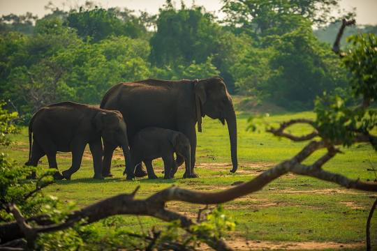
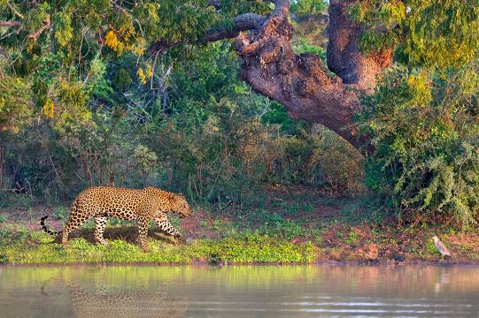
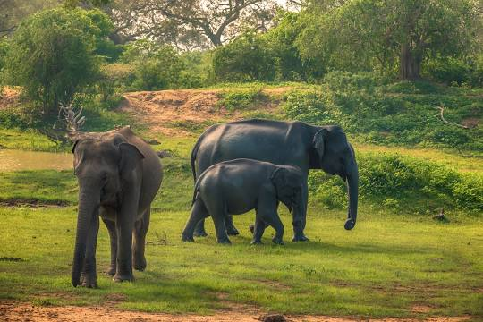
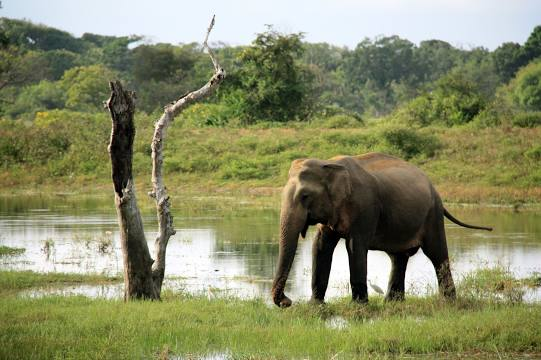
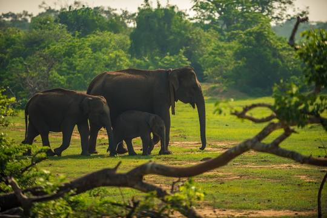
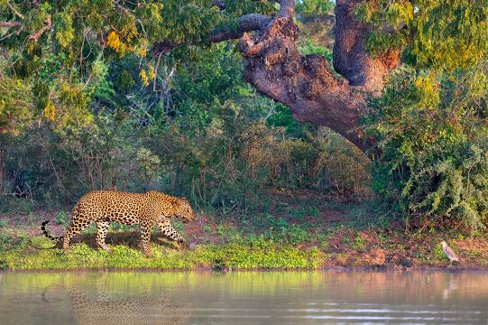
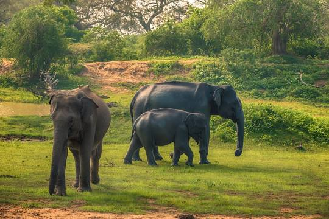
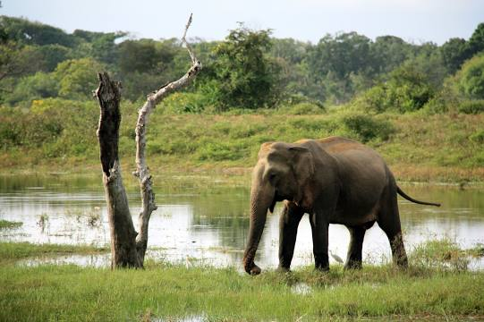

Yala National Park is the most visited and second largest national park in Sri
Lanka, bordering the Indian Ocean. The park consists of five blocks, two of which are now open to the
public, and also adjoining parks. The blocks have individual names such as, Ruhuna National Park, and
Kumana National Park or 'Yala East' for the adjoining area. It is situated in the southeast region of
the country, and lies in Southern Province and Uva Province. The park covers 979 square kilometres and
is located about 300 kilometres from Colombo.
Yala was designated as a wildlife sanctuary in
1900, and, along with Wilpattu was one of the first two national parks in Sri Lanka, having been
designated in 1938. The park is best known for its variety of wild animals. It is important for the
conservation of Sri Lankan elephants, Sri Lankan leopards and aquatic birds. There are six national
parks and three wildlife sanctuaries in the vicinity of Yala. Among the largest is Lunugamvehera
National Park. The park is situated in the dry semi-arid climatic region and rain is received mainly
during the northeast monsoon.

 






